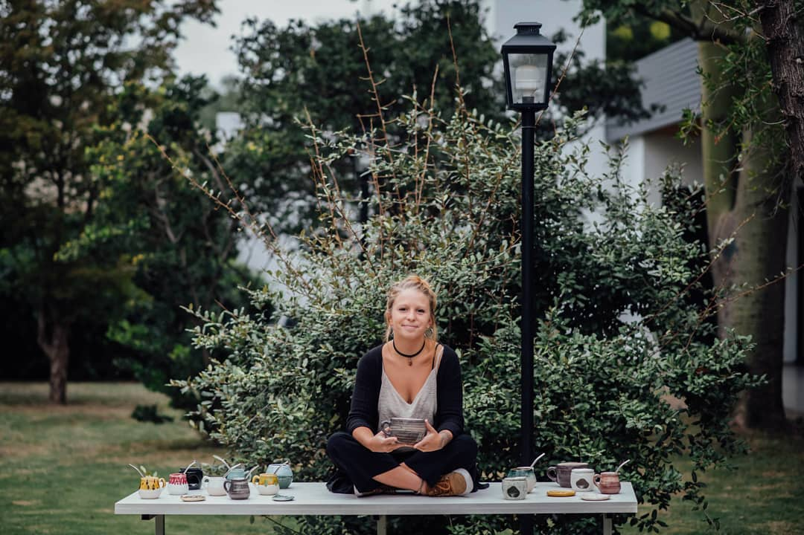

Quiénes somos?
Soy Cristina Torres, artista visual formada en la Universidad Nacional de Córdoba. Me especialicé en grabado y medios múltiples. Realicé diversos talleres de cerámica y biomateriales.
Ficus nace en el año 2019 de manera experimental. El proceso de creación de las piezas comienza con una indagación horizontal sobre las posibilidades matéricas de la arcilla. La blandura y maleabilidad de la arcilla como germen de las futuras vasijas. De las múltiples y proteicas resoluciones de esta búsqueda, surge la necesidad de comenzar a trabajar en serie. Se realizó entonces, la moldería para llevar a cabo la técnica de vaciado, que me permitió llevar a cabo mayor cantidad de piezas en un tiempo más acotado. Pero ese proceso más tendiente a lo industrial no es el único vehiculo para la construcción de las piezas. Persiste en mí el deseo de tocar las piezas con mis manos, de acariciar esa humedad hasta volverla cosa. Me motiva pensar que cada una de estas piezas, que atraviesan distintos estadíos y temperaturas, que me enseñan sobre el tiempo y consecucuentemente me hacen más paciente llegarán a estar en la vida de alguien más, entrarán en sus casas y formarán parte de sus rituales y sus días. Esa vida de la pieza es otra vida, a la cual ya no tengo acceso. Agradezco el proceso alquímico que me hace atravesar cada día el trabajo con la tierra.
Concepto
Los conceptos o ideas de mis piezas nacen en la materia misma, la encarnan. Lo emocional, lo sensorial se unen y generan formas y también palabras. En esas formas que van apareciendo casi sin querer siento, a veces, una nostalgia de mi tierra, del mar y la estepa, de esos charcos que se arman en las restingas y dibujan pequeños mundos descubiertos cuando baja la marea. Una imagen o un sueño, inspiración que me abre a la creación. Cada proceso de mi trabajo es un tránsito hacia la definición de la obra. En el amasado de la pasta gres se genera algo orgánico, propio del movimiento. Esos pliegues que se producen en la acción, los detengo, el fuego los petrifica. El torno es la herramienta principal, hace varios años que su lenguaje funciona con el ritmo de mi cuerpo. Las piezas de alfarería dependen de estas coordenadas sensitivas en el momento de trabajo y creación. El vacío generador de cada pieza, esa nada necesaria para que algo exista, me fue conectando con algo que fluye y se mueve, insistentemente. Algunas piezas que estoy realizando, son formas de las que una masa de color sale; las abre, algo las excede y las explota, como si fueran volcánicas. Esas piezas poderosas hablan de lo que en el interior no puede detenerse y aparece. Lo ancestral persistente que no puede reprimirse, porque siempre vuelve a brotar.
Amigos
Ficus se enriquece del universo de los afectos, florece con cada encuentro y palpita con la cercanía de quienes queremos. Por eso, te invito a conocer artistas amigues. Porque elles y mucha gente más ayudan a construir quien soy y se proyecta en FICUS.